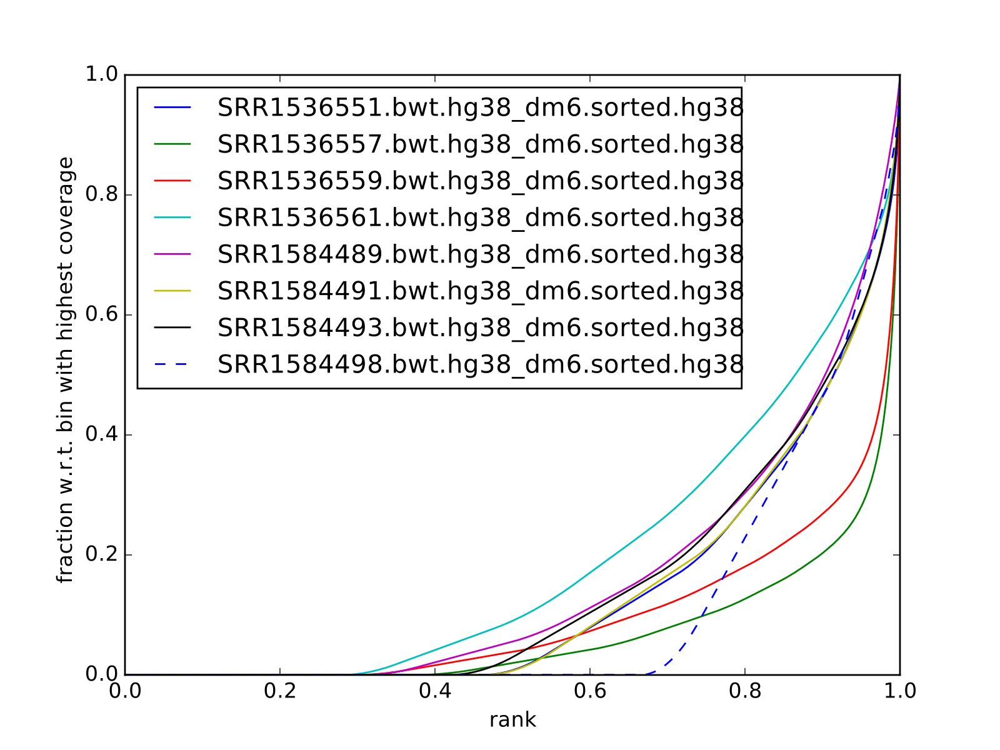
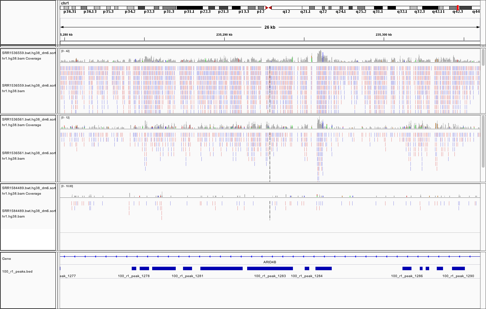

Detection of broad peaks from ChIP-seq data¶
Learning outcomes
be able to assess the quality of ChIP-seq data for factors with broad occupancy pattern
be able to detect regions of enrichment for factors with broad occupancy pattern
Requirements¶
MACS 2.2.6Rversion 4.0.3 (2020-10-10) – “Bunny-Wunnies Freak Out”csawand its dependencies
Bioconductor packages required for annotation:
org.Hs.eg.dbTxDb.Hsapiens.UCSC.hg38.knownGene
Please note that this lab consists of two parts:
calling broad peaks using
MACS(on Uppmax) andfinding enriched genomic windows using
csawinR(Uppmax / local).
Please note that this workflow has been tested using R 4.0.3 and csaw 1.24.3.
Instructions how to install R and Bioconductor packages (including dependencies for csaw) can be found in instructions to previous labs, for example csaw tutorial.
Data¶
We will use ChIP-seq of H3K79me2 from Orlando et al, 2014 (“Quantitative ChIP-Seq Normalization Reveals Global Modulation of the Epigenome”). H3K79me2 is enriched at active promoters and linked to transcriptional activation. This is a SE data set, which admitedly is not the best design for broad marks. To use this procedure with PE data, please follow modifications listed on MACS2 repository homepage.
GEO accession is GSE60104
ENA accession is PRJNA257491
Sample |
GEO Accession |
SRA Accession |
|---|---|---|
Jurkat_K79_100%_R1 |
GSM1465008 |
SRR1536561 |
Jurkat_K79_100%_R2 |
GSM1464998 |
SRR1536551 |
Jurkat_K79_50%_R1 |
GSM1465006 |
SRR1536559 |
Jurkat_K79_0%_R1 |
GSM1465004 |
SRR1536557 |
Jurkat_WCE_100%_R1 |
GSM1511469 |
SRR1584493 |
Jurkat_WCE_100%_R2 |
GSM1511474 |
SRR1584498 |
Jurkat_WCE_50%_R1 |
GSM1511467 |
SRR1584491 |
Jurkat_WCE_0%_R1 |
GSM1511465 |
SRR1584489 |
We will call peaks from one sample only, and compare the results to other samples processed earlier.
Data have been processed in the same way as for the TF ChIP-seq, i.e. the duplicated reads were removed, as were the reads mapped to the ENCODE blacklisted regions. In this case the reads were mapped to hg38 assembly of human genome.
Quality control¶
As always, one should start the analysis from assesment of data quality. This is already performed, and the plots and metrics are included below.
{kind=link}
{kind=link}
Cumulative enrichment¶
Another plot worth examining is cumulative enrichment (aka fingerprint from deepTools):
all samples |
|---|
|  |
{kind=link}
You can see that even though the cross correlation metrics don’t look great, some enrichment can be observed for the ChIP samples (SRR1536561, SRR1536551, SRR1536559, SRR1536557), and not for the input samples. As this data is data from very shallow sequencing, the fraction of the genome covered by reads is smaller than expected (0.3 for the best sample). Thus we do not expect to detect all occupancy sites, only the ones which give the strongest signal (this is actually an advantage for this class, as it reduces the running time).
Peak calling using MACS2¶
You will call peaks using sample Jurkat_K79_50_R1 SRR1536559 and its matching input SRR1584491.
Effective genome size for hg38 is 3.0e9.
The estimated fragment size is 180 bp (phantompeakqualtools).
mkdir -p results/macs
cd results/macs
ln -s /sw/courses/epigenomics/broad_peaks/bam/SRR1536559.bwt.hg38_dm6.sorted.hg38.BLfilt.bam
ln -s /sw/courses/epigenomics/broad_peaks/bam/SRR1584491.bwt.hg38_dm6.sorted.hg38.BLfilt.bam
module load bioinfo-tools #if needed
module load macs/2.2.6
macs2 callpeak -t SRR1536559.bwt.hg38_dm6.sorted.hg38.BLfilt.bam -c SRR1584491.bwt.hg38_dm6.sorted.hg38.BLfilt.bam -n 50_R1 --outdir 50_R1 -f BAM --gsize 3.0e9 -q 0.1 --nomodel --extsize 180 --broad --broad-cutoff 0.1
The main difference here, in comparison to detecting narrow peaks, is using the options --broad --broad-cutoff 0.1. The --broad on, MACS will try to composite broad regions in BED12 (gene-model-like format) by putting nearby highly enriched regions into a broad region with loose cutoff. The broad region is controlled by another cutoff through --broad-cutoff. If -p is set, this is a p-value cutoff, otherwise, it’s a q-value (FDR) cutoff.
Additonally, one should always use --nomodel --extsize NN for calling broad peaks. They tell MACS2 not to perform the fragment length estimation (because this does not work well for broad marks - the method is similar to the cross correlation) and instead we use 180 bp as a fragment length. Ideally, using PE data fragment length would be taken directly from data (because both ends of each fragment are sequenced).
If you would like to compare the results of two different methods of finding broad peaks, repeat this with another data set:
ln -s /sw/courses/epigenomics/broad_peaks/bam/SRR1536561.bwt.hg38_dm6.sorted.hg38.BLfilt.bam
ln -s /sw/courses/epigenomics/broad_peaks/bam/SRR1584493.bwt.hg38_dm6.sorted.hg38.BLfilt.bam
macs2 callpeak -t SRR1536561.bwt.hg38_dm6.sorted.hg38.BLfilt.bam -c SRR1584493.bwt.hg38_dm6.sorted.hg38.BLfilt.bam -n 100_R1 --outdir 100_R1 -f BAM --gsize 3.0e9 -q 0.1 --nomodel --extsize 180 --broad --broad-cutoff 0.1
You can now inspect the results in the output folder 50_R1. The structure is alike the output for calling narrow peaks. The file *.broadPeak is in BED6+3 format which is similar to narrowPeak file used for point-source factors, except for missing the 10th column for annotating peak summits. Look at MACS2 repository homepage for details.
How many peaks were identified?
[agata@r483 50_R1]$ wc -l *Peak
27699 50_R1_peaks.broadPeak
This is a preliminary peak list, and in case of broad peaks, it almost always needs some processing or filtering.
Hint
You can also copy the results from
/sw/courses/epigenomics/broad_peaks/results_pre/macs
Visual inspection of the peaks¶
You will use IGV for this step, and it is recommended that you run it locally on your own computer. Please load hg38 reference genome.
Required files are:
SRR1536559.bwt.hg38_dm6.sorted.hg38.BLfilt.bamand matchingbaiSRR1584491.bwt.hg38_dm6.sorted.hg38.BLfilt.bamand matchingbai50_r1_peaks.broadPeak
Hint
You can access the bam and bai files from
/sw/courses/epigenomics/broad_peaks/bam/
You can look at some locations of interest. Some peaks with low FDR (q value) or high fold enrichment may be worth checking out. Or check your favourite gene.
Some ideas:
chr start end length pileup -log10(pvalue) fold_enrichment -log10(qvalue) name
chr1 15864352 15871317 6966 8.31 8.77860 6.24525 6.17940 50_r1_peak_174
chr1 6197308 6199294 1987 17.78 12.94012 7.17401 10.00101 50_r1_peak_74
chr1 23336678 23344012 7335 16.27 14.83352 8.39527 11.73484 50_r1_peak_352
chr1 31060370 31065323 4954 16.87 14.33009 8.02259 11.28237 50_r1_peak_531
chr1 31920283 31923371 3089 14.80 18.46969 10.69499 15.06099 50_r1_peak_543
chr1 31923542 31937975 14434 18.04 18.76121 10.30353 15.33368 50_r1_peak_544
chr1:15864352-15871317
chr1:6197308-6199294
chr1:23336678-23344012
chr1:31060370-31065323
chr1:31923542-31937975
Below you see IGV visualisations of the following
chr1:230,145,433-230,171,784
chr1:235,283,256-235,296,431
chr1:244,857,626-244,864,213
chr1:45,664,079-45,690,431
The first two locations visualise peaks longer than 2kb. The third and the fourth are a 4 kb-long peaks with strong fold erichment over background.
two upper tracks are ChIP samples, the bottom track is input |
|---|
|  |
{kind=link}
All the above demonstrate one of the common caveats of calling broad peaks: regions obviously enriched in a mark of interest are represented as a series of adjoining peaks which in fact should be merged into one long enrichment domain. You may leave it as is, or merge the peaks into longer ones, depending on the downstream application.
Postprocessing of peak candidates¶
Please note that this step is only an example, as any postprocessing of peak calling results is highly project specific.
Normally, you would work with replicated data. As in the case of TFs earlier, it is recommended to continue working with peaks reproducible between replicates.
The peak candidate lists can and should be further filtered, based on fold enrichment and pileup value, to remove peaks which could have a high fold enrichment but low signal, as these are likely non-informative. Any filtering, however has to be performed having in mind the biological characteristics of the signal.
You can merge peaks which are close to one another using bedtools. You will control the distance of features to be merged using option -d. Here we arbitrarily choose 1 kb.
cp 50_R1_peaks.broadPeak 50_r1.bed
module load bioinfo-tools
module load BEDTools/2.27.1
bedtools merge -d 1000 -i 50_r1.bed > 50_r1.merged.bed
#how many peaks?
wc -l *bed
27699 50_r1.bed
11732 50_r1.merged.bed
Alternative approach: window-based enrichment analysis (csaw)¶
This workflow is similar to the one using csaw designed for TF peaks. The differences pertain to analysis of signal from diffuse marks. Please check the csaw tutorial for setup and more detailed comments on each step.
You will use data from the same dataset, however, the files were processed in a different manner: the alignments were not filtered to remove duplictate reads nor the reads mapping to the ENCODE blacklisted regions. To reduce the computational burden, the bam files were subset to contain alignments to chr1.
Note
This exercise was tested on Rackham using pre-installed R libraries. Local installation of recommended R packages may require additional software dependecies.
Requirements Local¶
csawedgeR
R packages required for annotation:
org.Hs.eg.dbTxDb.Hsapiens.UCSC.hg38.knownGene
Recommended:
R-Studio to work in
Getting the data
First, you need to copy the necessary files to your laptop:
cd /desired/location
scp <USERNAME>@rackham.uppmax.uu.se:/sw/courses/epigenomics/broad_peaks/broad_peaks_bam.tar.gz .
#type your password at the prompt
tar zdvf broad_peaks_bam.tar.gz
Requirements Remote (Uppmax)¶
The software is configured.
To prepare the files, assuming you are in ~/broad_peaks/results:
mkdir csaw
cd csaw
mkdir bam_chr1
ln -s /sw/courses/epigenomics/broad_peaks/bam_chr1/* bam_chr1
A side note: You may have noticed that some of the bam files contain alignments to dm6 - an assembly of Drosophila melanogaster genome. This is because we are using the same data set as for the quantitative ChIP-seq tutorial (on Wednesday). For now we ignore the alignments to dm6 and focus on hg38.
Remote:
conda activate /sw/courses/epigenomics/software/conda/v8
R
Or locally work in RStudio.
The remaining part of the exercise is performed in R.
Remote:
# provide the tutorial specific path to R libraries
assign(".lib.loc", "/sw/courses/epigenomics/software/R", envir = environment(.libPaths))
# verify that the tutorial-specific R library path is added
.libPaths()
[1] "/sw/courses/epigenomics/software/R"
Sort out the working directory and file paths:
setwd("/path/to/workdir")
dir.data = "/path/to/desired/location/bam_chr1"
#for example when in broad_peaks/csaw
dir.data = "./bam_chr1"
k79_100_1=file.path(dir.data,"SRR1536561.bwt.hg38_dm6.sorted.chr1.hg38.bam")
k79_100_2=file.path(dir.data,"SRR1536551.bwt.hg38_dm6.sorted.chr1.hg38.bam")
k79_100_i1=file.path(dir.data,"SRR1584493.bwt.hg38_dm6.sorted.chr1.hg38.bam")
k79_100_i2=file.path(dir.data,"SRR1584498.bwt.hg38_dm6.sorted.chr1.hg38.bam")
bam.files <- c(k79_100_1,k79_100_2,k79_100_i1,k79_100_i2)
Read in the data:
frag.len=180
library(csaw)
data <- windowCounts(bam.files, ext=frag.len, width=100)
You will identify the enrichment windows by performing a differential occupancy analysis between ChIP and input samples.
Information on the contrast to test:
grouping <- factor(c('chip', 'chip', 'input', 'input'))
design <- model.matrix(~0 + grouping)
colnames(design) <- levels(grouping)
library(edgeR)
contrast <- makeContrasts(chip - input, levels=design)
Next, you need to filter out uninformative windows with low signal prior to further analysis. Selection of appropriate filtering strategy and cutoff is key to a successful detection of differential occupancy events, and is data dependent. Filtering is valid so long as it is independent of the test statistic under the null hypothesis. One possible approach involves choosing a filter threshold based on the fold change over the level of non-specific enrichment (background). The degree of background enrichment is estimated by counting reads into large bins across the genome.
The function filterWindowsGlobal returns the increase in the abundance of
each window over the global background.
Windows are filtered by setting some minimum threshold on this increase. Here, a fold change of 3 is necessary for a window to be considered as containing a binding site.
In this example, you estimate the global background using ChIP samples only. You can do it using the entire dataset including inputs of course.
bam.files_chip <- c(k79_100_1,k79_100_2)
bin.size <- 2000L
binned.ip <- windowCounts(bam.files_chip, bin=TRUE, width=bin.size, ext=frag.len)
data.ip=data[,1:2]
filter.stat <- filterWindowsGlobal(data.ip, background=binned.ip)
keep <- filter.stat$filter > log2(3)
data.filt <- data[keep,]
To examine how many windows passed the filtering:
summary(keep)
Mode FALSE TRUE
logical 39272 48875
To normalise the data for different library sizes you need to calculate normalisation factors based on large bins:
binned <- windowCounts(bam.files, bin=TRUE, width=10000)
data.filt <- normFactors(binned, se.out=data.filt)
data.filt$norm.factors
## [1] 1.0106655 0.8825254 1.0076520 1.1126402
Detection of DB windows (in our case, the occupancy sites):
data.filt.calc <- asDGEList(data.filt)
data.filt.calc <- estimateDisp(data.filt.calc, design)
fit <- glmQLFit(data.filt.calc, design, robust=TRUE)
results <- glmQLFTest(fit, contrast=contrast)
You can inspect the raw results:
> head(results$table)
logFC logCPM F PValue
1 1.5993767 3.768796 1.9155001 0.1663567
2 1.5993767 3.768796 1.9155001 0.1663567
3 1.3875763 4.476065 1.9777830 0.1596273
4 0.9306821 4.812106 1.0695744 0.3010442
5 0.6936473 5.077305 0.6639666 0.4151651
6 0.9355537 5.218651 1.2539775 0.2627969
The following steps will calculate the FDR for each peak, merge peaks within 1 kb and calculate the FDR for resulting composite peaks.
merged <- mergeWindows(rowRanges(data.filt), tol=1000L)
table.combined <- combineTests(merged$id, results$table)
Short inspection of the results:
head(table.combined)
DataFrame with 6 rows and 8 columns
num.tests num.up.logFC num.down.logFC PValue FDR direction
<integer> <integer> <integer> <numeric> <numeric> <character>
1 14 0 0 0.486592 0.527626 mixed
2 19 0 0 0.366146 0.404923 down
3 3 0 0 0.205758 0.241335 down
4 1 0 0 0.238252 0.274038 down
5 3 0 0 0.488160 0.528994 up
6 4 0 0 0.983807 0.985523 mixed
rep.test rep.logFC
<integer> <numeric>
1 10 0.9281614
2 33 -1.9986066
3 36 -1.3523859
4 37 -1.0531498
5 38 1.6221839
6 42 0.0184684
How many regions are up (i.e. enriched in chip compared to input)?
is.sig.region <- table.combined$FDR <= 0.1
table(table.combined$direction[is.sig.region])
down mixed up
13 5 1283
Does this make sense? How does it compare to results obtained from a MACS run?
You can now annotate the results as in the csaw TF exercise:
library(org.Hs.eg.db)
library(TxDb.Hsapiens.UCSC.hg38.knownGene)
anno <- detailRanges(merged$region, txdb=TxDb.Hsapiens.UCSC.hg38.knownGene,
orgdb=org.Hs.eg.db, promoter=c(3000, 1000), dist=5000)
merged$region$overlap <- anno$overlap
merged$region$left <- anno$left
merged$region$right <- anno$right
all.results <- data.frame(as.data.frame(merged$region)[,1:3], table.combined, anno)
sig=all.results[all.results$FDR<0.05,]
all.results <- all.results[order(all.results$PValue),]
head(all.results)
filename="k79me2_100_csaw.txt"
write.table(all.results,filename,sep="\t",quote=FALSE,row.names=FALSE)
To compare with peaks detected by MACS it is convenient to save the results in BED format:
sig.up=sig[sig$direction=="up",]
starts=sig.up[,2]-1
sig.up[,2]=starts
sig_bed=sig.up[,c(1,2,3)]
filename="k79me2_100_peaks.bed"
write.table(sig_bed,filename,sep="\t",col.names=FALSE,quote=FALSE,row.names=FALSE)
You can now load the bed file to IGV along with the appropriate broad.Peak file and zoom in to your favourite location on chromosome 1.